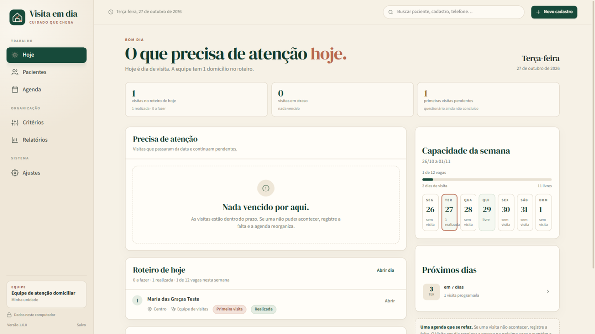
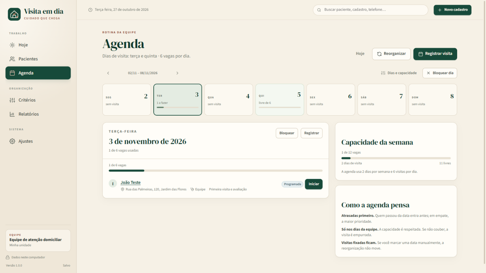
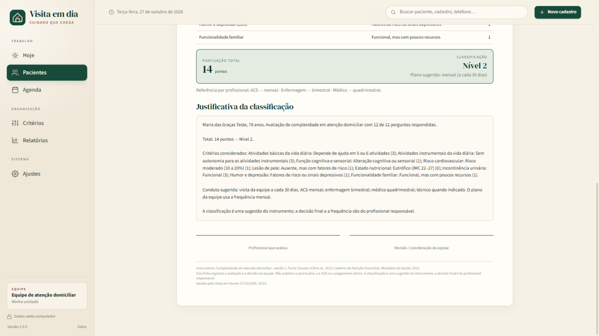

As visitas certas, na frequência certa.
O Visita em dia organiza o cadastro de pacientes, a avaliação de cuidado, a justificativa da classificação e a agenda da equipe. Tudo em um só lugar, com os dados guardados no próprio aparelho.
Android (em preparação para o Google Play) e Windows. Pacote Android: visita.em.dia.

O que faz
Da avaliação à visita, sem planilhas soltas
O Visita em dia foi criado para equipes de atenção domiciliar que precisam justificar a frequência das visitas e manter a agenda coerente com a capacidade real do serviço.
Cadastro e histórico
Identificação, contato, endereço, equipe, cuidador, condições de saúde e dispositivos. Busca por nome, cadastro, CNS, CPF, telefone ou rua.
Avaliação e classificação
Questionário configurável com pontuação, regras, classificação sugerida e justificativa editável. As fichas guardam a versão do instrumento usada.
Agenda que respeita a equipe
Planos por profissional, dias de visita, capacidade diária, bloqueios, remanejamento e registro de visitas realizadas ou faltas.
Como funciona
Simples para a rotina, cuidadoso com os dados
- Funciona offline, sem servidor do desenvolvedor e sem conta obrigatória.
- Os dados ficam no armazenamento privado do aplicativo, protegidos por criptografia.
- O backup é criado pelo usuário, com senha própria, e pode ser guardado no aparelho ou no próprio Google Drive.
- Não há anúncios, rastreamento, telemetria ou venda de dados.
- Relatórios em CSV e ficha em PDF para o trabalho da equipe.
O que o aplicativo não é
O Visita em dia não é prontuário eletrônico, não substitui o e-SUS ou os sistemas oficiais e não é um dispositivo médico.
A classificação e a frequência são sugestões do instrumento configurado pela equipe. A decisão final é sempre do profissional responsável.
Por dentro
Telas do aplicativo
As imagens usam dados fictícios e mostram a versão desktop; a versão Android mantém a mesma lógica e as mesmas telas.


Privacidade
Seus dados ficam com você
O desenvolvedor não recebe, não acessa e não armazena os dados inseridos no aplicativo. A base pertence à unidade de saúde que usa o programa.
O acesso ao Google Drive é opcional e serve apenas para gravar uma cópia de segurança cifrada na pasta privada do aplicativo dentro da conta Google do próprio usuário. O aplicativo não lê nem altera os outros arquivos do Drive.
O usuário pode desconectar a conta e revogar o acesso a qualquer momento em myaccount.google.com/permissions.
Uso limitado das APIs do Google
O uso das informações recebidas das APIs do Google pelo Visita em dia está em conformidade com a Política de Dados do Usuário dos Serviços de API do Google, incluindo os requisitos de Uso Limitado.
Os dados do Google não são usados para publicidade, perfilamento, concessão de crédito nem são vendidos ou compartilhados com terceiros.
Documentos
Transparência e condições de uso
English summary
Visita em dia is an offline-first Android and Windows app for home-care health teams. It helps register patients, apply a configurable assessment, justify a care classification, and schedule visits according to team capacity. Patient data is stored locally and encrypted; there is no developer server, advertising, or telemetry. An optional backup can be saved, encrypted with a user-chosen password, to the user's own Google Drive app-data folder. The app is not an electronic medical record and does not replace official health systems or clinical judgement.